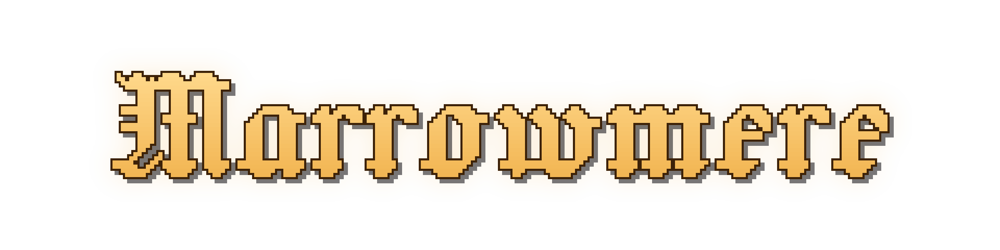
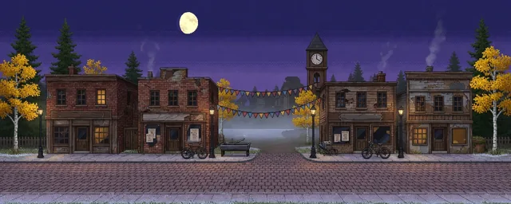
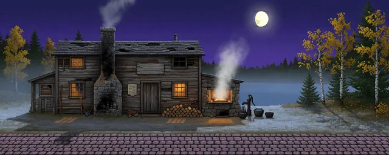
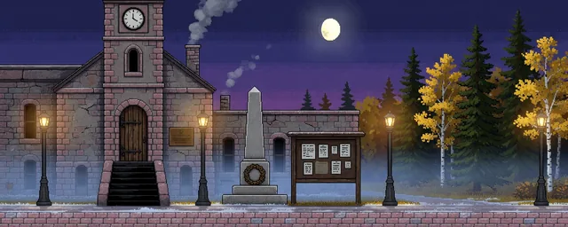
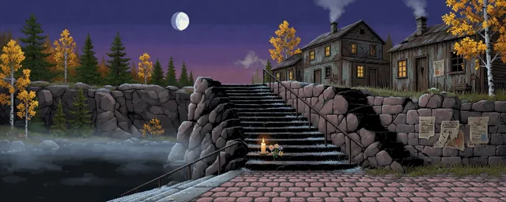

Marrowmere
A 16-bit-style folk horror story adventure

IT WILL HOLD.
Thursday 24 September 2026
The dead do the scaring here
Marrowmere is a township of 712 living people and 86 kept dead in northern Ontario. It lived on granite for ninety-four years, and since 1976 it has lived on the Show, in which its own dead do the scaring. Tonight is closing night. The Clerk is closing the town piece by piece, and everyone calls it sabotage. You are the night attendant.
The game
One night shift
-

A town to walk
Walk the street strips from the viaduct to the Quarry Lip and open the doors: more than seventy places.
-

Living and kept
Talk with thirty principal residents, living and kept. Each wants one stupid thing very badly and keeps one secret.
-

A case to build
Gather evidence and build your case: what was done, who did it, and why. Every clue is true. Read them carefully.
-

Choices kill
Four residents can die by your word. Every death is foreshadowed, and every fatal line is offered beside a safe one.
-

One night, three endings
The Show's closing night, from the first coach to the last tour. Three endings. One of them is hidden.
-

A 16-bit night
A 16-bit-style town at 480 by 270 in indigo, violet and lamplight. The horror is in what goes missing. No gore, ever.
The town
Around Marrowmere
Backgrounds from the game. Select one to see it larger.


Residents
The living and the kept
A few of the residents you will meet tonight. Every one of them wants something.


POP. 666 GHOSTS
A 1976 marketing figure, never corrected, which the kept find flattering.
Mailing list
Notices from the Township
Occasional news about Marrowmere. One click and you are off the list.
Coming 2027
Two editions, one closing night
Standard Edition, $9.99 USD. Deluxe Edition, the same game with the developer's heartfelt thanks, $14.99 USD.